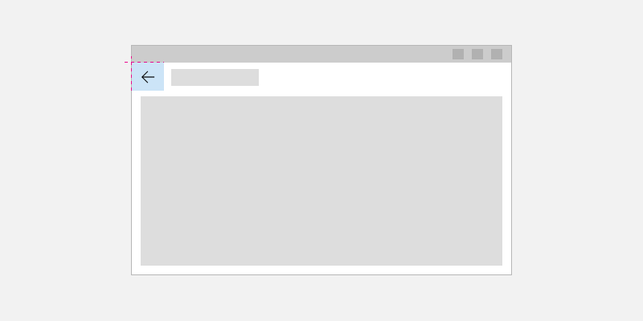
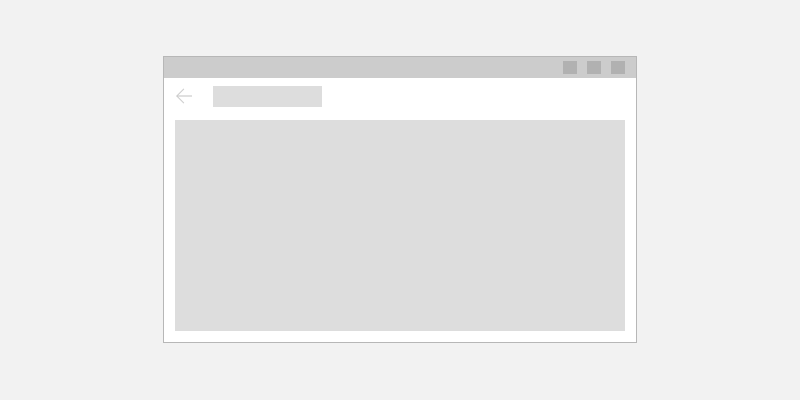

Navigation history and backwards navigation for Windows apps
- Applies to: Windows App SDK/WinUI3
- Important APIs: Frame class, Page class, Frame.GoBack method
To implement backwards navigation in your app, place a back button at the top left corner of your app's UI. The user expects the back button to navigate to the previous location in the app's navigation history. By default, the Frame control records navigation actions in its BackStack and ForwardStack. However, you can modify which navigation actions are added to the navigation history.
Note
For most apps that have multiple pages, we recommend that you use the NavigationView control to provide the navigation framework for your app. It adapts to a variety of screen sizes and supports both top and left navigation styles. If your app uses the NavigationView control, then you can use NavigationView's built-in back button.
The guidelines and examples in this article should be used when you implement navigation without using the NavigationView control. If you use NavigationView, this information provides useful background knowledge, but you should use the specific guidance and examples in the NavigationView article
Back button
We recommend that you place the back button in the upper left corner of your app. If you customize the title bar, place the back button in the title bar. See Title bar design > Back button for more info.
If you use the TitleBar control to create a custom title bar, use the built-in back button. Set IsBackButtonVisible to true, set IsBackButtonEnabled as needed, and handle the BackRequested event to navigate.
To create a stand-alone back button, use the Button control with the TitleBarBackButtonStyle resource, and place the button at the top left hand corner of your app's UI (for details, see the XAML code examples below).

<Page>
<Grid>
<Grid.RowDefinitions>
<RowDefinition Height="Auto"/>
<RowDefinition Height="*"/>
</Grid.RowDefinitions>
<Button x:Name="BackButton"
Click="BackButton_Click"
Style="{StaticResource TitleBarBackButtonStyle}"
IsEnabled="{x:Bind Frame.CanGoBack, Mode=OneWay}"
ToolTipService.ToolTip="Back"/>
</Grid>
</Page>
If your app has a top CommandBar, place the Button control in the CommandBar.Content area.
<Page>
<Grid>
<Grid.RowDefinitions>
<RowDefinition Height="Auto"/>
<RowDefinition Height="*"/>
</Grid.RowDefinitions>
<CommandBar>
<CommandBar.Content>
<Button x:Name="BackButton"
Click="BackButton_Click"
Style="{StaticResource TitleBarBackButtonStyle}"
IsEnabled="{x:Bind Frame.CanGoBack, Mode=OneWay}"
ToolTipService.ToolTip="Back"/>
</CommandBar.Content>
<AppBarButton Icon="Delete" Label="Delete"/>
<AppBarButton Icon="Save" Label="Save"/>
</CommandBar>
</Grid>
</Page>
In order to minimize UI elements moving around in your app, show a disabled back button when there is nothing in the backstack (IsEnabled="{x:Bind Frame.CanGoBack, Mode=OneWay}"). However, if you expect your app will never have a backstack, you don't need to display the back button at all.

Back navigation
This section demonstrates code to handle back navigation. Typical sources of a back navigation request are the TitleBar.BackRequested event, NavigationView.BackRequested event, or back button Click event.
This example code demonstrates how to implement backwards navigation behavior with a back button. The code responds to the Button Click event to navigate.
If you use the back button in a NavigationView or TitleBar control, you can put the frame navigation code directly in the event handler method without needing to duplicate it for each page. However, if you create a back button in the content of your app pages, you would need to duplicate the frame navigation code in each page's code-behind file. To avoid duplication, you can put the navigation related code in the App class in the App.xaml.* code-behind page and then call it from anywhere in your app, as shown here.
Important
You need to update the existing code for m_window in the App class to create a public static property for Window as shown here in the last lines of code. See Change Window.Current to App.Window for more info.
// MainPage.xaml.cs
private void BackButton_Click(object sender, RoutedEventArgs e)
{
App.TryGoBack();
}
// App.xaml.cs
//
// Add this method to the App class.
public static bool TryGoBack()
{
Frame rootFrame = Window.Content as Frame;
if (rootFrame.CanGoBack)
{
rootFrame.GoBack();
return true;
}
return false;
}
public static Window Window { get { return m_window; } }
private static Window m_window;
// MainPage.h
namespace winrt::AppName::implementation
{
struct MainPage : MainPageT<MainPage>
{
MainPage();
void MainPage::BackButton_Click(IInspectable const&, RoutedEventArgs const&)
{
App::TryGoBack();
}
};
}
// App.xaml.h
using namespace winrt;
using namespace Windows::UI::Xaml::Controls;
struct App : AppT<App>
{
App();
static winrt::Microsoft::UI::Xaml::Window Window() { return window; };
// ...
// Perform back navigation if possible.
static bool TryGoBack()
{
Frame rootFrame{ nullptr };
auto content = App::Window().Content();
if (content)
{
rootFrame = content.try_as<Frame>();
if (rootFrame.CanGoBack())
{
rootFrame.GoBack();
return true;
}
}
return false;
}
private:
static winrt::Microsoft::UI::Xaml::Window window;
};
// App.xaml.cpp
winrt::Microsoft::UI::Xaml::Window App::window{ nullptr };